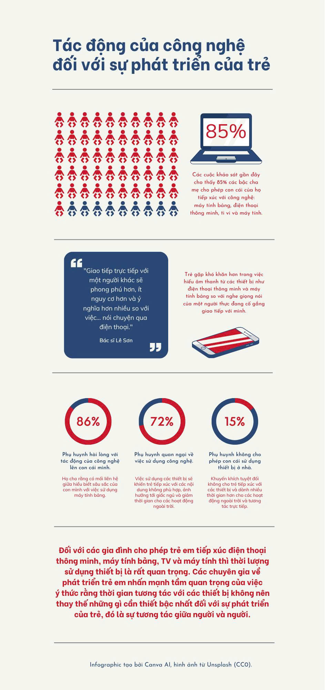

Lợi ích của Công nghệ số trong Học tập
Trang web trưng bày các sản phẩm truyền thông đa phương tiện sáng tạo của sinh viên.
1. Infographic minh họa

2. Video giới thiệu ngắn
Trình duyệt của bạn không hỗ trợ thẻ video.